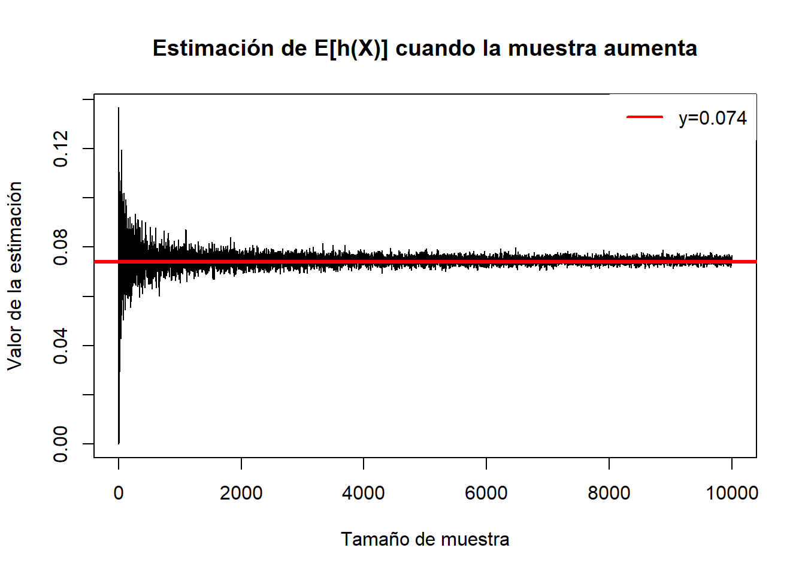
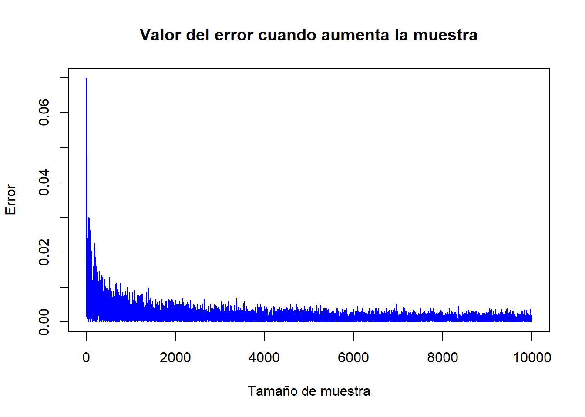
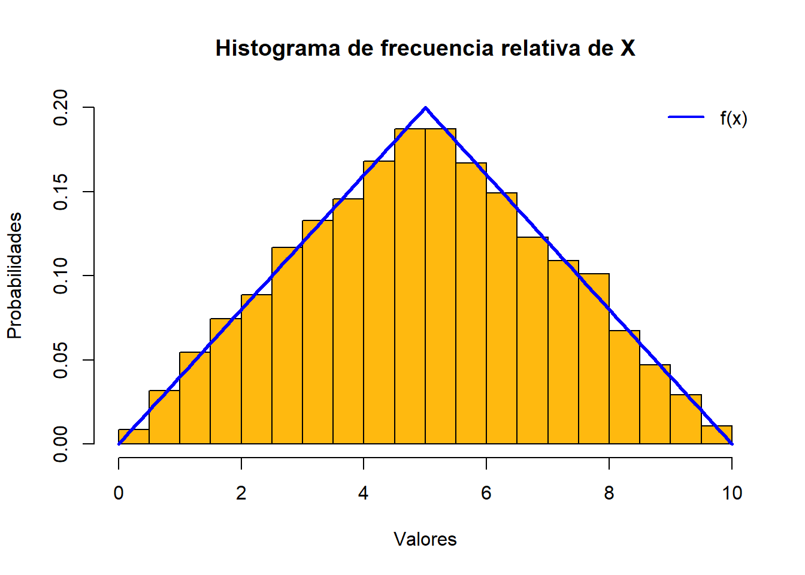

Informe tarea 1 simulación estocastica
Pregunta 1.
a) Se desea conocer el volumen bajo la siguiente superficie.
b) Para encontrar esta expresión es necesario hacer unos cambios de variable.
\[ \theta=\int_0^3 \int_0^2 x \cdot y^2 \sqrt{x^2+y^3} d y d x \]
\[ y=2k \space \Longrightarrow dy=2dk\\ \]
\[ x=3j \space \Longrightarrow dy=3dj\\ \]
Luego, remplazando se obtiene lo siguiente.
\[ \theta=\int_0^1 \int_0^1 3j \cdot (2k)^2 \sqrt{(3j)^2+(2k)^3} 2dk 3d j \\ \]
Simplificando se tiene la expresión final.
\[ \theta=\int_0^1 \int_0^1 72 \cdot j \cdot k^2 \cdot \sqrt{9 j^2+8 k^3} d k d j \]
c)
fu <- function(n){
k <- runif(n,0,1)
j <- runif(n,0,1)
m <- NULL
for (i in 1:n){
m[i] <-72*(k[i])^(2)*j[i]*sqrt((3*j[i])^2+(2*k[i])^3)
}
valor <- mean(m)
return(valor)
}d) El valor real de la integral es.
library(pracma)
integral2(f,0,3,0,2)$Q
[1] 34.1137
$error
[1] 4.646122e-13Si se compara el algoritmo usando distintos valores de n se tiene.
#con 10^2
n <- 10^2
fu(n)[1] 39.3516#con 10^3
n <- 10^3
fu(n)[1] 33.38649#con 10^4
n <- 10^4
fu(n)[1] 33.04788Se puede apreciar que a medida que crece la muesta, el valor estimado se acerca cada vez más al verdadero valor de la integral.
Pregunta 2.
a) Se tiene que la esperanza de h(x) es:
\[ E(h(x))=\int_{-\infty}^{\infty} \frac{1}{\sqrt{2 \pi}} \cdot e^{-\frac{x^{2}}{2}} \cdot \left(e^{-\frac{(x-3)^{2}}{2}}+e^{-\frac{(x-6)^{2}}{2}}\right) d x \]
\[ \frac{1}{\sqrt{2\pi}}\int_{-\infty}^{\infty} \left(e^{\frac{-x^2-(x-3)^{2}}{2}}+e^{\frac{-x^2-(x-6)^{2}}{2}}\right) d x = \frac{1}{\sqrt{2 \pi}} \int_{-\infty}^{\infty} e^{\frac{-2 x^{2}+6 x-9}{2}}+e^{\frac{-2 x^{2}+12 x-36}{2}} d x \]
\[ = \frac{1}{\sqrt{2 \pi}}\left[\int_{-\infty}^{\infty} e^{\frac{-2 x^{2}+6 x-9}{2}}+\int_{-\infty}^{\infty} e^{\frac{-2 x^{2}+12 x-36}{2}}\right] = \frac{1}{\sqrt{2 \pi}}\left[I+II \right] \]
Se resuelve de integral I.
\[ \int_{-\infty}^{\infty} e^{\frac{-2 x^2+6 x-9}{2}}dx=\int_{-\infty}^{\infty} e^{-\frac{9}{2}} \cdot e^{\frac{-2 x^2+6 x}{2}}dx=e^{-\frac{9}{2}} \int_{-\infty}^{\infty} e^{-\frac{2 x^2+6 x}{2}}dx \]
\[ =e^{-\frac{9}{2}} \int_{-\infty}^{\infty} e^{-x^2+3 x} d x=e^{-\frac{9}{2}} \int_{-\infty}^{\infty} e^{\frac{9}{4}-\left(x-\frac{3}{2}\right)^2} d x \]
Se usa el cambio de variable u=x-3/2 ==>du=dx
\[ =e^{-\frac{9}{2}} \int_{-\infty}^{\infty} e^{\frac{9}{4}} \cdot e^{u^2} d u=e^{-\frac{9}{4}} \int_{-\infty}^{\infty} e^{-u^2} d u \]
Como la integral que se tiene es una integral gaussiana, se obtiene I.
\[ I=e^{-\frac{9}{4}} \cdot \sqrt{\pi} \]
Se resuelve II
\[ II= \int_{-\infty}^{\infty} e^{\frac{-2 x^{2}+12 x-36}{2}}dx=\int_{-\infty}^{\infty} e^{-18} \cdot e^{-\frac{2 x^{2}+12 x}{2}}dx \]
\[ =e^{-18} \int_{-\infty}^{\infty} e^{-x^{2}+6 x} d x=e^{-18} \int_{-\infty}^{\infty} e^{-(x-3)^{2}+9} d x =e^{-9} \int_{-\infty}^{\infty} e^{-(x-3)^{2}} d x \\ \]
Se hace cambio de variable v=x-3 ==> dv=dx, se obtiene nuevamente una integral gaussiana.
\[ II=e^{-9} \int_{-\infty}^{\infty} e^{-v^{2}} d v=e^{-9} \cdot \sqrt{\pi} \]
Finalmente, la expresión de la esperanza queda de la siguiente manera:
\[ E(h(x))=\frac{1}{\sqrt{2\pi}}\left[e^{-\frac{9}{4}} \cdot \sqrt{\pi}+e^{-9} \cdot \sqrt{\pi} \right] = \frac{\sqrt{\pi}}{\sqrt{2} \cdot \sqrt{\pi}}\left[e^{-\frac{9}{4}}+e^{-9}\right] \]
\[ = \frac{1}{\sqrt{2}}\left[e^{-\frac{9}{4}}+e^{-9}\right]= 0.0746... \]
b)
v <- NULL
montecarlo <- function(u){
x1 <- log(u/(1-u))
dx1 <- 1/(u*(1-u))
v <- exp(-x1^2/2)*(exp(-(x1-3)^2/2)+exp(-(x1-6)^2/2))*dx1/sqrt(2*pi)
return(v)
}
aprox <- function(n){
resultado<- NULL
u <- runif(n,0,1)
resultado <- mean(montecarlo(u))
return(resultado)
}
#muestra
estimacion <- function(n)
{
est <- NULL
for(i in 1:n)
{
est[i] <- aprox(i)
}
return(est)
}c)
n <- 10^4
x <- seq(1,n)
#Se grafica como se aproxima la estimacion dependiendo de la muestra
plot(x, estimacion(n), type = "l", xlab = "Tamaño de muestra", ylab = "Valor de la estimación",
main = "Estimación de E[h(X)] cuando la muestra aumenta")
abline(h= 0.074 , col= "red", lwd=3)
legend(x = "topright",
legend = c("y=0.074"),
lty = c(1),
col = c("red"),
lwd = 2,
box.lty = 0)
Se puede apreciar que cuando la muestra sube, la estimación se acerca más al valor real de la esperanza.
d)
n <- 10^4
real <- rep(0.074,n)
error <- abs(real-estimacion(n))
plot(error, type = "l" , col="blue" ,xlab = "Tamaño de muestra", ylab = "Error",
main = "Valor del error cuando aumenta la muestra")
Evidentemente, a medida que aumenta la muestra, el error es cada vez menor.
Pregunta 3.
a)
Para calcular la función de distribución es necesario integrar la funcion de densidad.
para 2a<=x<a+b
\[ F(x)=\int_{2 a}^x \frac{s-2 a}{(b-a)^2} d s=\left.\frac{1}{(b-a)^2}\left(\frac{s^2}{2}-2 a s\right)\right|_{2 a} ^x =\frac{1}{(b-a)^2}\left(\frac{x^2}{2}-2 a x-2 a^2+4 a^2\right) \]
\[ =\frac{x^2-4 a x+4 a^2}{2(b-a)^2} = \frac{(x-2a)^2}{2(b-a)^2} \]
Notar que F(a+b)=1/2
Ahora, para a+b<x<2b
\[ F(x)\int_{2 a}^{a+b} f(s) d s+\int_{a+b}^x \frac{2 b-i}{(b-a)^2} d i \]
notar que la primera integral es F(a+b)=1/2
\[ =\frac{1}{2}+\left.\frac{1}{(b-a)^2}\left(2 b i-\frac{i^2}{2}\right)\right|_{a+b} ^x =\frac{1}{(b-a)^2}\left(2 b x-\frac{x^2}{2}-2 b(a+b)+\frac{(a+b)^2}{2}\right) \]
\[ =\frac{-x^2+a^2+4 b x-2 a b-3 b^2}{2(b-a)^2}+\frac{1}{2} = \frac{1}{2(b-a)^{2}} \cdot\left((b-a)^{2}-(x-2 b)^{2}\right)+\frac{1}{2} \]
luego, en a+b<x
\[ F(x)=\frac{1}{2(b-a)^{2}} \cdot\left((b-a)^{2}-(x-2 b)^{2}\right)+\frac{1}{2} \]
Notar que F(2b)=1
Finalmente, se tiene la funcion de distribución
\[ F(x)=\left\{\begin{array}{l} 0,\space x \leqslant 2 a \\ \frac{(x-2a)^2}{2(b-a)^2},\space 2 a<x \leqslant a+b \\ \frac{1}{2(b-a)^{2}} \cdot\left((b-a)^{2}-(x-2 b)^{2}\right)+\frac{1}{2}, \space a+b<x\\ 1,\space 2b\leqslant x \end{array}\right. \]
b)
A cada ramificacion, se iguala U=F(x) y se despeja x.
Analiticamente se tiene que
\[ x \in [2a,a+b) \]
\[ \Longrightarrow F(2a)\le U< F(a+b) \]
\[ \Longrightarrow 0\le U< \frac{1}{2} \]
para 0<=U<1/2
\[ \begin{aligned} & \frac{(x-2 a)^{2}}{2(b-a)^{2}}=U \\ \Rightarrow &(x-2 a)^{2}=2(b-a)^{2} \cdot U \\ \Rightarrow &(x-2 a)=\sqrt{2 U(b-a)^{2}} \\ \Rightarrow & x=2 a+(b-a) \sqrt{2 U} \end{aligned} \]
Ahora para la segunda ramificación, como F(a+b)=1/2 y F(2b)=1 , estos resultados seran los limites de la nueva rama ya que.
\[ x\in [a+b,2b) \]
\[ \Longrightarrow F(a+b)\le U< F(2b) \]
\[ \Longrightarrow \frac{1}{2}\le U< 1 \]
Para 1/2<=U<1
\[ \begin{aligned} & \frac{1}{2}+\frac{(b-a)^2-(x-2 b)^2}{2(b-a)^2}=U / \cdot 2(b-a)^2 \\ \Rightarrow &(b-a)^2+(b-a)^2-(x-2 b)^2=2 U(b-a)^2 \\ \Rightarrow &-(x-2 b)^2=2 U(b-a)^2-2(b-a)^2 /\cdot-1 \\ \Rightarrow &(x-2 b)^2=2(a-b)^2-2 U(b-a)^2 \\ \Rightarrow &(x-2 b)^2=2(a-b)^2(1-U) / \sqrt{ } \\ \Rightarrow & x=2 b+(a-b) \sqrt{2(1-U)} \end{aligned} \]
Con esto, se muestra que la función inversa es igual a como se muestra en el enunciado.
c)
Pasos:
Crear un vector nulo, definir.
Generar un vector de varibles aleatorias uniformes cuyo largo es la cantidad de variables X que se quiera obtener.
Para cada elemento del vector de variables uniformes se compara si es menor o mayor a 0.5.
Dependiendo la comparacion anterior, se evalua en una expresion de la transformación inversa.
Una ves evaluado en alguna expresion, se agrega el resultado al vector nulo del inicio, asi hasta comparar todos los elementos del vector de variables uniformes.
Retornar el vector con todos los valores de los elementos evaluados
d)
g <- function(n,a,b){
x <- NULL
u <- runif(n,0,1)
for (i in 1:n){
if (u[i]<0.5){
c <- 2*a+(b-a)*sqrt(2*u[i])
}else{
c <- 2*b+(a-b)*sqrt(2*(1-u[i]))
}
x[i] <- c
}
return(x)
}e)
n <- 10^4
b <- 5
a <- 0
x <- g(n,a,b)
hist(x,freq=FALSE, col="darkgoldenrod1", ylim = c(0,0.2),xlab = "Valores",ylab = "Probabilidades", main = "Histograma de frecuencia relativa de X",
)
legend(x = "topright",
legend = c("f(x)"),
lty = c(1),
col = c("blue"),
lwd = 2,
box.lty = 0)
fe2 <- function(x){
return((x-2*a)/(b-a)^2)}
fe3 <- function(x){
return((2*b-x)/(b-a)^2)
}
curve(fe2(x),from=0 ,to=5,add = TRUE, col= "blue", lwd = 3)
curve(fe3(x),from=5 ,to=10,add = TRUE , col = "blue", lwd = 3)